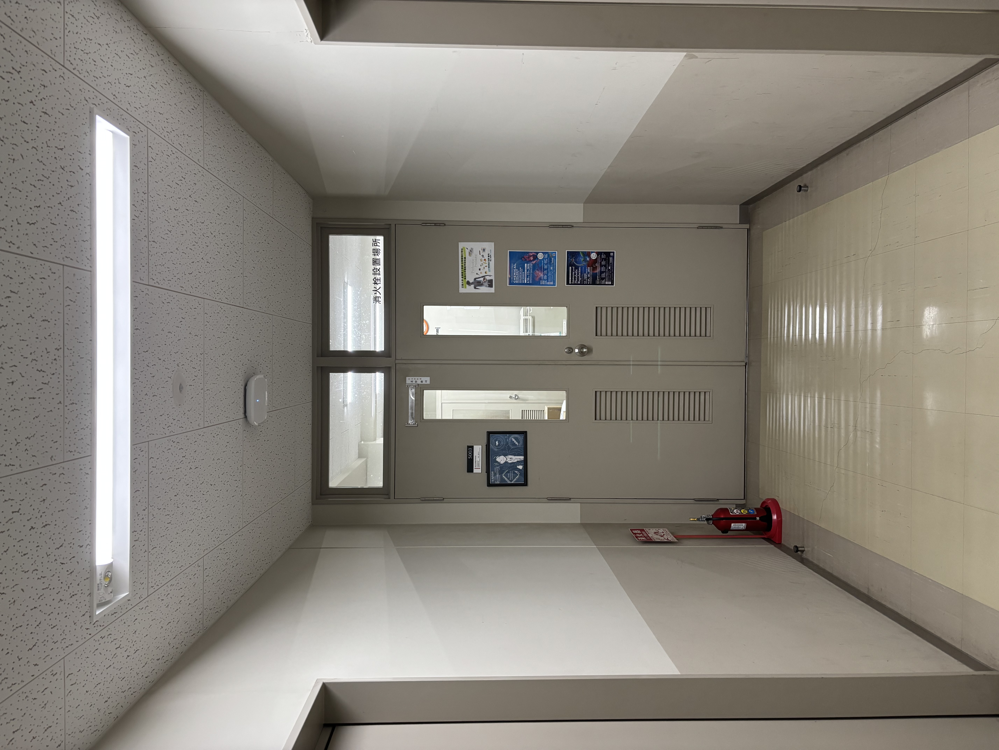

本研究室は2024年に始まった比較的新しい研究室です。まだ歴史は短いですが、より良い研究成果を生み出すため、北野隆司准教授の指導のもと、大学院生や4年生が積極的に研究へ取り組んでいます。
本研究室では、食品成分や腸内細菌由来代謝物が、生体内受容体を介して代謝・免疫・神経機能へ与える影響について研究しています。また、既存のテーマだけでなく、新たな課題や未知の分野にも挑戦しながら、幅広い知識と技術を学ぶ姿勢を大切にしています。

